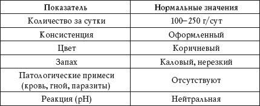
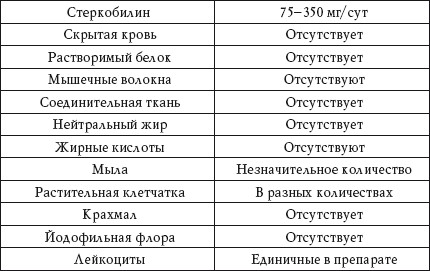
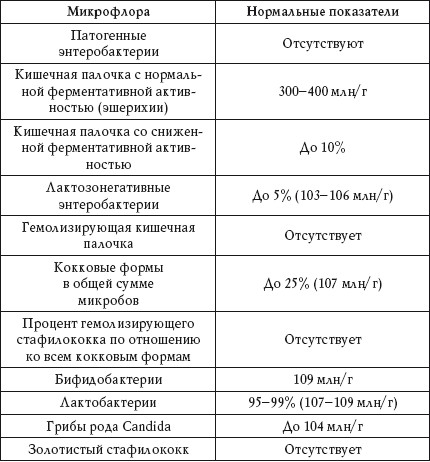

Исследование кала проводят для диагностики желудочно-кишечных заболеваний, а также гельминтоза. Материалом для анализа служит свежий кал, который должен быть доставлен в лабораторию в сухой чистой посуде не позже чем через 8-12 часов после его выделения. Нельзя отправлять кал на исследование после клизмы, приема препаратов беладонны, железа, висмута, бария, касторого масла.
Копрологическое исследование. Общий анализ
Нормальные показатели анализа кала представлены в таблице 68.
Таблица 68
Копрологическое исследование. Нормальные показатели


Количество за сутки
Повышенный показатель
Повышенное выделение кала наблюдается при:
• нарушении поступления желчи;
• недостаточности поджелудочной железы;
• бродильной и гнилостной диспепсии;
• хроническом энтерите;
• отравлении;
• кишечных инфекциях.
Количество выделяемого кала зависит от объема и характера пищи. При употреблении богатых клетчаткой продуктов оно увеличивается, при приеме легкоусвояемых – уменьшается.
Пониженный показатель
Пониженное выделение кала наблюдается при запорах.
Консистенция
Плотный кал
Выделение плотного (такназываемого овечьего кала) наблюдается при:
• запоре;
• спазме толстой кишки.
Кашицеобразный кал
Выделение кашицеобразного кала наблюдается при:
• ускоренной эвакуации из толстой кишки;
• колите, который сопровождается диареей;
• бродильной диспепсии.
Мазевидный кал
Выделение мазевидного кала наблюдается при:
• отсутствии поступления желчи;
• нарушении секреции поджелудочной железы.
Жидкий кал
Выделение жидкого кала наблюдается при:
• гнилостной диспепсии;
• повышенной секреции в толстом кишечнике.
Пенистый кал
Выделение пенистого кала наблюдается при бродильной диспепсии.
Цвет
Цвет кала определяется присутствием стеркобилина и имеет коричневый оттенок. Однако на цвет экскрементов влияет пища и прием некоторых лекарственных препаратов.
Светло-коричневый
Светло-коричневый цвет кала наблюдается при:
• растительной диете;
• ускоренной эвакуации из толстой кишки.
Темно-коричневый
Темно-коричневый цвет кала наблюдается при:
• запорах;
• колите;
• мясной диете;
• нарушении пищеварения;
• гнилостной диспепсии.
Частый жидкий стул – диарея – является признаком заболеваний кишечника инфекционного, нервного, эндокринного, токсического и аллергического происхождения.
Дегтеобразный
Дегтеобразный (черный) цвет кала наблюдается при:
• приеме препаратов висмута, железа, активированного угля;
• употреблении в пищу черной смородины, черники, кофе;
• кровотечении из верхних отделов желудочно-кишечного тракта.
Красноватый
Красноватый цвет кала наблюдается при:
• употреблении в пищу свеклы, темного винограда;
• кровотечении из толстой кишки и геморроидальных узлов;
• колите с изъязвлениями.
Зеленоватый
Зеленоватый цвет кала наблюдается при:
• повышенной перистальтике кишечника;
• содержании в каловых массах билирубина или биливердина.
Светло-желтый
Светло-желтый цвет кала наблюдается при:
• бродильной диспепсии;
• недостаточности поджелудочной железы;
• плохом переваривании пищи в толстой кишке.
Серовато-белый
Серовато-белый (ахолический) цвет кала наблюдается при прекращении поступления в кишечник желчи.
Запах
Гнилостный
Гнилостный запах кала наблюдается при:
• нарушениях пищеварения;
• колите, который сопровождается запором;
• моторных расстройствах кишечника;
• нарушении секреции поджелудочной железы.
Кислый
Кислый запах кала наблюдается при бродильной диспепсии.
Зловонный
Зловонный запах кала наблюдается при:
• гиперсекреции толстой кишки;
• прекращении поступления в кишечник желчи;
• нарушениях секреции поджелудочной железы.
Запах кала зависит от количества скатола, индола, фенола и других пахучих веществ, образующихся в результате переваривания пищи.
Примеси
Кровь
Наличие в кале крови наблюдается при нарушении целостности слизистой оболочки желудочно-кишечного тракта.
Гной
Наличие в кале гноя наблюдается при:
• дизентерии;
• язвенном колите;
• распаде опухоли толстой кишки.
Паразиты
Визуально в кале могут быть замечены острицы, аскариды, власоглав, а также обрывки и отдельные членики ленточных червей.
Реакция
Слабощелочная
Слабощелочная реакция pH кала наблюдается при недостаточном переваривании пищи в тонкой кишке.
Щелочная
Щелочная реакция pH кала наблюдается при:
• недостаточном переваривании пищи в желудке;
• нарушении секреции поджелудочной железы;
• колите;
• запорах;
• гиперсекреции желез толстой кишки.
Резкощелочная
Резкощелочная реакция pH кала наблюдается при гнилостной диспепсии.
Резкокислая
Резкокислая реакция pH кала наблюдается при бродильной диспепсии.
Стеркобилин
Повышенный показатель
Повышенное значение стеркобилина в кале – гиперхолический кал – наблюдается при:
• усиленном желчеотделении;
• гемолитической анемии.
Пониженный показатель
Пониженное значение стеркобилина в кале – ахолический кал – наблюдается при:
• болезнях печени;
• обтурационной желтухе;
• холангите.
Скрытая кровь
Положительный результат
Наличие в кале скрытой крови наблюдается при:
• кровотечении из желудочно-кишечного тракта;
• кровотечении из верхних дыхательных путей, когда больной заглатывает кровь;
• распаде опухоли желудочно-кишечного тракта.
Перед сдачей анализа кала на скрытую кровь в течение трех дней рекомендуется соблюдать диету, исключающую употребление мяса, рыбы, яиц и зелени.
Растворимый белок
Положительный результат
Наличие в кале растворимого белка наблюдается при:
• гнилостной диспепсии;
• колите;
• повышенной секреции желез толстой кишки;
• кровотечении.
Мышечные волокна
Положительный результат
Наличие в кале мышечных волокон наблюдается при:
• недостаточном переваривании белков при ахилии;
• ослаблении панкреатического переваривания;
• анацидном состоянии.
Соединительная ткань
Положительный результат
Наличие в кале соединительной ткани наблюдается при:
• снижении количества или отсутствии свободной соляной кислоты в желудке;
• функциональной недостаточности поджелудочной железы.
Нейтральный жир
Положительный результат
Наличие в кале нейтрального жира наблюдается при:
• недостаточном поступлении панкреатической липазы или желчи;
• плохом переваривании в тонкой кишке.
Жирные кислоты и мыла
Положительный результат
Наличие в кале жирных кислот и мыла наблюдается при:
• уменьшении поступления в кишечник желчи;
• бродильной диспепсии;
• нарушении секреции поджелудочной железы.
Крахмал
Положительный результат
Наличие в кале крахмала наблюдается при:
• ускоренной перистальтике кишечника;
• снижении функции поджелудочной железы.
Йодофильная флора
Положительный результат
Наличие в кале йодофильной флоры наблюдается при:
• нарушении секреции поджелудочной железы;
• недостаточности переваривания в тонкой кишке;
• ускоренной перистальтике;
• нарушении желудочного пищеварения.
Лейкоциты
Положительный результат
Наличие в кале лейкоцитов наблюдается при:
• дизентерии;
• раке;
• туберкулезе;
• язвенном колите;
• воспалительных заболеваниях толстой кишки;
• при прорыве в кишечник парапроктального абсцесса.
Анализ на наличие паразитов
Обнаружение простейших
В кале здорового человека простейшие отсутствуют.
Наиболее часто в кишечнике человека встречаются:
• дизентерийная амеба, вызывающая изъязвление стенки кишечника;
• лямблии, паразитирующие в тонком кишечнике и желчном пузыре;
• кишечные трихомонады;
• балантидии – ресничные инфузории, паразитирующие в кишечнике человека.
Обнаружение гельминтов
Пробу на анализ сдают утром. Врач делает соскоб с перианальных складок.
Паразитирующие в организме человека черви относятся к двум подтипам – круглые черви (нематоды) и плоские черви. Плоские черви делятся на ленточных червей (цестод) и сосальщиков (трематод).
К круглым червям относятся:
• аскарида;
• острица;
• власоглав;
• томинкс;
• кривоголовка двенадцатиперстная;
• некатор;
•трихостронгилиды.
К ленточным червям относятся:
• цепень невооруженный;
• цепень вооруженный;
• цепень крысиный;
• цепень карликовый;
• цепень тыквовидный;
• лентец малый;
• лентец широкий.
К сосальщикам относятся:
• двуустка кошачья;
• двуустка китайская;
• двуустка печеночная;
• двуустка легочная;
• двуустка ланцетовидная.
Анализ на дисбактериоз
Нормальные показатели анализа представлены в таблице 69.
Таблица 69
Анализ на дисбактериоз. Нормальные показатели

Патогенные энтеробактерии
Положительный результат
Наличие в кале патогенных энтеробактерий наблюдается при:
• сальмонеллезе;
• дизентерии;
• брюшном тифе.
Кишечная палочка с нормальной ферментативной активностью
Количество кишечной палочки среди других бактерий не больше 1%, но ее роль очень важна, поскольку она препятствует проникновению чужеродных микробов в стенку кишечника и забирает из просвета кишечника кислород, который является ядом для лакто– и бифидобактерий.
У ребенка до 6-8 месяцев количество кишечной палочки может быть около 100 млн/г. Это нормальный показатель. Ближе к 12 месяцам и в более старшем возрасте количество кишечной палочки должно быть 300400 млн/г.
Пониженный показатель
Понижение общего количества кишечной палочки наблюдается при заражении глистами и простейшими.
Кишечная палочка со сниженной ферментативной активностью
Эта кишечная палочка не выполняет полезных функций, но при этом не приносит никакого вреда.
Повышенный показатель
Повышение количества кишечной палочки со сниженной ферментативной активностью наблюдается при начинающимся дисбактериозе.
Лактозонегативные энтеробактерии
Это большая группа условно-патогенных бактерий, количество которых должно быть не более 5% (103-106 – умеренное повышение, более 106 – существенное повышение).
Повышенный показатель
Повышение количества энтеробактерий наблюдается при:
• запоре;
• аллергии;
• лактазной недостаточности.
Гемолизирующая кишечная палочка
Это представитель лактозонегативных энтеробактерий, который в норме должен отсутствовать.
Положительный результат
Наличие в анализе гемолизирующей кишечной палочки наблюдается при:
• аллергии;
• дисбактериозе;
• иммунодефицитных состояниях.
Кокковые формы в общей сумме микробов
Энтерококки являются самыми безобидными представителями условно-патогенной флоры. Они часто встречаются в кишечнике здоровых людей и в количестве до 25% не угрожают здоровью.
Повышенный показатель Повышение количества энтерококков наблюдается при:
• нарушении нормальной флоры кишечника;
• дисфункции, связанной с дисбактериозом.
Процент гемолизирующего стафилококка по отношению ко всем кокковым формам
Этот показатель выявляет наличие патогенных кокков среди бактерий, не приносящих вреда организму.
Бифидобактерии
Это основные представители нормальной кишечной микрофлоры, выполняющие расщепление, переваривание и всасывание различных компонентов пищи.
Бифидобактерии синтезируют витамины и способствуют усвоению их из пищи, принимают участие во всасывании в кишечнике железа, кальция и других микроэлементов, стимулируют моторику кишечника и способствуют его нормальному опорожнению, а также нейтрализуют токсины.
Пониженный показатель
Существенное понижение количества бифидобактерий наблюдается при ярко выраженном дисбактериозе.
Лактобактерии
Лактобактерии (лактобациллы, молочнокислые микробы, молочнокислые стрептококки) вырабатывают молочную кислоту, которая необходима для нормальной работы кишечника. Также они обеспечивают противоаллергическую защиту, способствуют нормальному опорожнению кишечника и вырабатывают фермент, расщепляющий лактозу (молочный сахар).
Пониженный показатель
Понижение количества лактобактерий наблюдается при:
• аллергии;
• запоре;
• лактазной недостаточности.
Грибы рода Candida
Повышенный показатель
Повышение показателя в анализе наблюдается при:
• приеме антибиотиков;
• кандидозе, в том числе и системном.
Золотистый стафилококк
Это один из самых опасных представителей условно-патогенной флоры.
Чем больше в кишечнике бифидобактерий, нормальной кишечной палочки и лактобактерий, тем меньше вреда приносит организму золотистый стафилококк.
Как правило, в нормах анализа указывается, что золотистый стафилококк должен отсутствовать, однако допустимо его количество, не превышающее 103.
Повышенный показатель
Повышение количества золотистого стафилококка наблюдается при:
• дисбактериозе;
• ослаблении иммунной системы;
• аллергии;
• приеме антибиотиков;
• дисфункции кишечника;
• гнойничковой кожной сыпи.